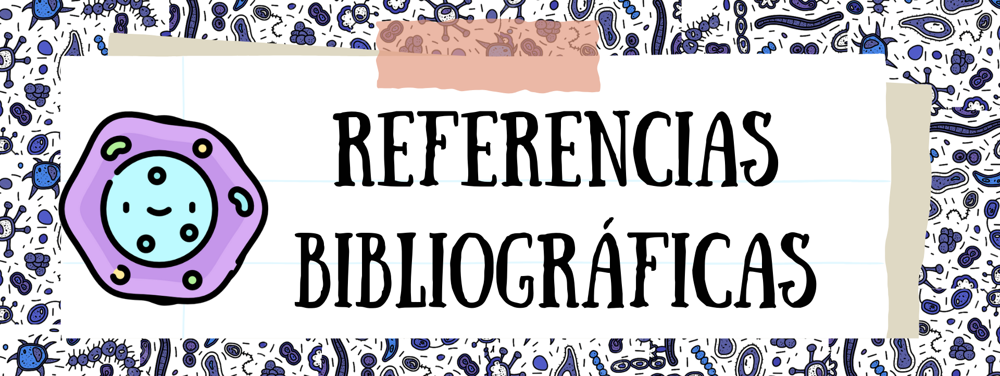

Cusi Tineo H. (2021). Lenguaje de programación en Bloques Definición de programación en bloque, para qué sirve la programación en bloque, como funciona la programación en bloques, estructura de una programación en bloques, definición de bloque, tipos de bloques, ejemplos, software de programación de bloques, y aplicaciones en los distintos programas para el lenguaje de programación en bloques. Aplicaciones. Universidad Nacional de Educación Enrique Guzmán y Valle. Disponible en: https://repositorio.une.edu.pe/handle/20.500.14039/8493
Makeblock (28 de febrero de 2023). Block Reference - Makeblock Help Center. https://support.makeblock.com/hc/en-us/articles/12738783754903-Block-Reference
Mohamad, S., Patel, A., Tew, Y., Latih, R., & Qassim, Q. (2011). Principles and dynamics of block-based programming approach. 2011 IEEE Symposium on Computers & Informatics, 340-345. https://doi.org/10.1109/ISCI.2011.5958938.Ruiz Gutierrez, J. M. (s.f.) mBlock: Aprende a programar paso a paso. https://www.robotix.es/ebook/mblock.pdf Ruiz, I., & Fernandez, C. (2021). Programming by Blocks. Minicursos da VII Jornadas Ibero-Americanas de Interação Humano-Computador. https://doi.org/10.5753/sbc.7266.5.3. Ruíz Ramírez, C. A., Montoya Quintero, D. M., & Jimenez Builes, J. A. (2021). Ambiente visual integrado de desarrollo para el aprendizaje de programación en robótica. Investigación E Innovación En Ingenierías, 9(1), 7–21. https://doi.org/10.17081/invinno.9.1.3957 Selwyn-Smith, B., Anslow, C., & Homer, M. (2022). Blocks, Blocks, and More Blocks-Based Programming. Proceedings of the 1st ACM SIGPLAN International Workshop on
Programming Abstractions and Interactive Notations, Tools, and Environments. https://doi.org/10.1145/3563836.3568726.